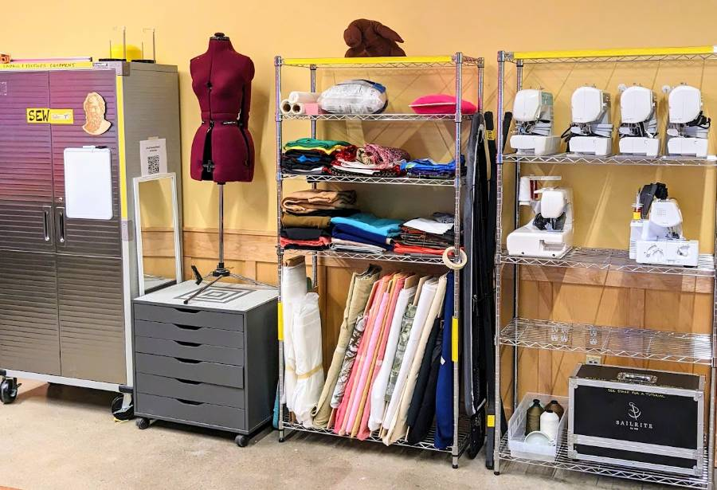

Sewing & Textiles
Sewing and textiles equipment and materials are labeled yellow.
Training

Sewing and textiles training happens as requested by staff and/or community members. It is also the subject of some workshops. See workshops on the BTU Lab Calendar.
See the BTU Mischief Makers page to contact one of our community experts for sewing tutorials.
Equipment
- Multi-stitch sewing machines
- 4-thread serger
- Industrial sewing machine
- Cutting mats
- Fabric scissors and knives
- Pins & needles
- Iron & ironing board
- Random fabrics
- Oh yeah... and more.